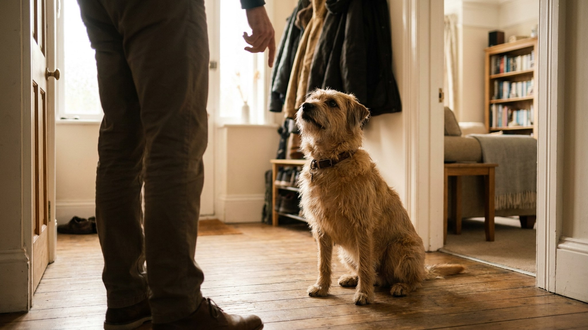

Собака прыгает на гостей: 4 шага к вежливому приветствию без наказаний

6 июня 2026 · 8 минут чтения · Воспитание · Поведение · Собаки
Гость открывает дверь — и собака уже на задних лапах, лапами на плечах. Это не агрессия: 30-килограммовая «радость» может сбить с ног ребёнка или пожилого человека. Хорошая новость: поведение меняется без наказаний за 2–3 недели — если действовать последовательно. Ниже — пошаговый план и типичные ошибки, которые сводят работу к нулю.
🐾 Дневник здоровья питомца — в кармане
Вес, прививки, симптомы и напоминания в одном приложении. AnimaLife следит за здоровьем питомца вместо вас.
Завести дневник → Открыть в MAX →
Почему собака прыгает
У собак приветствие — это контакт морда к морда. Когда щенок здоровается с матерью или однопомётниками, он тянется к их морде снизу вверх. Этот инстинкт остаётся со взрослой собакой: чтобы дотянуться до лица человека, нужно встать на задние лапы.
К этому добавляется подкрепление: каждый раз, когда собака прыгала, человек на неё реагировал. Смотрел, говорил «нет», отталкивал, смеялся. С точки зрения собаки — любая реакция лучше, чем игнор. Прыжок работает, значит прыжок нужен.
Шаг 1: уберите подкрепление
Первое и главное — прыжок должен перестать «работать». Это означает: никакой реакции при прыжке. Совсем.
- Собака прыгает — вы разворачиваетесь спиной, скрещиваете руки, не смотрите, не говорите ничего.
- Как только собака опускает лапы на пол — разворачиваетесь, смотрите, говорите спокойно «молодец», гладите.
- Если снова прыгает — снова поворот спиной.
Это называется «гашение»: поведение без подкрепления затухает. Но сначала может стать хуже — собака будет прыгать активнее, проверяя, не передумали ли вы. Это нормально, держитесь.
Шаг 2: научите альтернативу
Собака не может просто «не прыгать» — ей нужно знать, что делать вместо этого. Самый простой вариант — «сидеть» при приветствии.
- Тренируйтесь в спокойной обстановке, не у двери: подходите к собаке с энтузиазмом, как гость. Как только она начинает тянуться вверх — пауза, команда «сидеть».
- Собака сидит — немедленное угощение и ласка. Много, ярко, щедро.
- Повторяйте по 5-10 раз в день в разных ситуациях.
- Постепенно усложняйте: более возбуждённый подход, звонок в дверь, приход реального человека.
Шаг 3: проработайте вход в квартиру
Дверь — самое сложное место, потому что уровень возбуждения собаки там максимален. Нужна отдельная тренировка.
- Звонок в дверь → собака получает команду «место» или «сидеть» ещё до открытия.
- Открываете дверь только когда собака выполняет команду.
- Гость входит медленно, не делает резких движений, не наклоняется к собаке первым.
- Собака сидит или стоит на месте — гость здоровается спокойно, угощение.
- Если сорвалась — гость разворачивается, вы повторяете команду.
Первые тренировки делайте с «подставными гостями» — попросите друга или соседа позвонить несколько раз и разыграть вход по плану.
Шаг 4: инструктируйте гостей
Обучение ломается, если гости ведут себя не по правилам. Собака быстро понимает, что с одними людьми прыгать «работает», с другими нет — и продолжает прыгать в ожидании удачного момента.
- Предупреждайте гостей заранее: «если прыгнет — разворачивайся спиной, не смотри, не говори ничего».
- Попросите гостей не наклоняться к собаке при входе — это провокация прыжка.
- Когда собака спокойно стоит или сидит — пусть гость сам угостит её. Это закрепляет связь «спокойное поведение = приятный человек».
- Дети — отдельная история. Обязательно объясните ребёнку правило «разворот спиной» и не оставляйте собаку без присмотра с маленькими детьми до выработки устойчивого навыка.
Типичные ошибки
- Непоследовательность: иногда разрешаем прыгать («ну ладно, раз уж так рад»), иногда нет. Собака не понимает правила — правила нет.
- Наказание: коленом в грудь, отталкивание — это физическая реакция, которую собака может воспринимать как игру или, наоборот, как агрессию. Оба варианта плохи.
- Обучение только хозяином: все члены семьи и регулярные гости должны действовать одинаково.
- Нет альтернативы: запрещать без замены неэффективно. У собаки должна быть другая стратегия приветствия.
Сколько времени займёт
При последовательной работе — 2-3 недели. Первую неделю будет хуже, потому что собака «проверяет» новое правило. На второй неделе прыжков станет заметно меньше. К концу третьей — у большинства собак устойчивый навык.
Если через месяц активной работы результата нет — обратитесь к кинологу. Иногда прыжки на людей имеют более сложный контекст и требуют индивидуального разбора.
Прыжки в разных ситуациях: нюансы
Собака может прыгать не одинаково в разных контекстах. Понимание ситуации помогает выбрать правильный подход.
- Прыгает только на хозяина при возвращении домой: это ритуал встречи. Можно скорректировать — войти тихо, игнорировать до момента успокоения, поздороваться только когда четыре лапы на полу.
- Прыгает только на незнакомых людей: может быть связано с возбуждением от нового человека. Здесь важнее всего работа «гость разворачивается спиной» + предварительная прогулка для снижения уровня энергии.
- Прыгает на всех без разбора: комплексная работа: правило «четыре лапы на полу» со всеми членами семьи и гостями.
- Прыгает и при этом скулит, повизгивает: высокий уровень возбуждения. Прогулка перед приходом гостей снимает часть напряжения.
Что делать прямо сейчас, если гость уже пришёл
Если тренировка только начата, а гость уже на пороге:
- Попросите гостя встать в сторону, не двигаться активно.
- Дайте команду «сидеть» или «место» собаке.
- Если сорвалась и прыгнула — попросите гостя развернуться, ничего не говорить.
- Когда успокоится — гость здоровается спокойно, вы угощаете собаку.
- Не «устраивайте сцен» при госте — спокойная, нейтральная реакция с обеих сторон работает лучше.
Постепенно гости станут частью тренировки, а не источником стресса для всех участников.
Материал носит информационный характер и не заменяет очную консультацию ветеринара.
← Все статьи · Открыть AnimaLife в Telegram · RSS